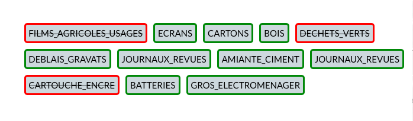
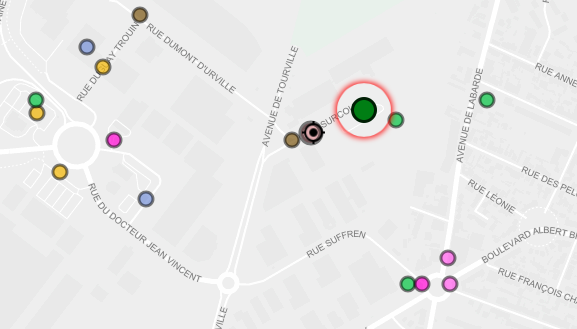
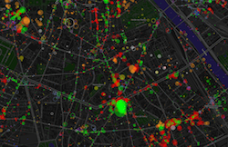
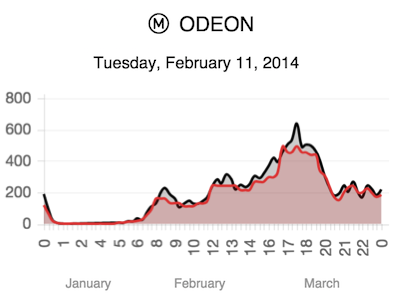
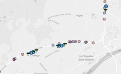

Civic hackers company working openly on data science, design, open hardware
6element
Waste is valuable
We work with recycling centers to make people realize the potent value of their waste, and help them find a solution to make the most of it.
Get data
We have designed sensors capable of- estimating affluence based on smartphones wi-fi signatures while respecting privacy
- knowing the availability of bins in recycling centers
Inform people
 Our application answers these questions:- how can my waste be useful ?
- what is the most efficient way ?
- where and when should i go ?
Organize reuse
We aim at enhancing the reuse by connecting waste producers and waste consumers, whoever they may be.
Your company has too heavy processes ? Want to bypass traditional cycles and be inspired with Hacking culture ?
We bring to life datascience projects, from a simple prototype to a fully integrated solutions.
- 
- 
-


You want to improve your team technical skills (Javascript, Docker, IoT) and enhance your working environment ? We share our expertise, good practices, and provide state-of-the-art tools.
Feel free to consult our training catalog or call us for a taylor-made session.